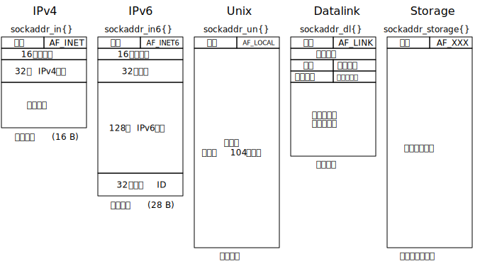

相关结构与函数
struct in_addr {
in_addr_t s_addr; /* normally uint32_t */
/* network byte ordered */
};
struct sockaddr_in {
uint8_t sin_len; /* length of structure (16) */
sa_family_t sin_family; /* AF_INET, normally uint8_t */
in_port_t sin_port; /* 16-bit TCP or UDP port number */
/* network byte ordered */
struct in_addr sin_addr; /* 32-bit IPv4 address */
/* network byte ordered */
char sin_zero[8]; /* unused */
};
POSIX 规范要求的数据类型：
| 数据类型 | 说明 | 头文件 |
|---|---|---|
int8_t |
带符号的 8 位整数 | <sys/types.h> |
unit8_t |
无符号的 8 位整数 | <sys/types.h> |
int16_t |
带符号的 16 位整数 | <sys/types.h> |
uint16_t |
无符号的 16 位整数 | <sys/types.h> |
int32_t |
带符号的 32 位整数 | <sys/types.h> |
uint32_t |
无符号的 32 位整数 | <sys/types.h> |
sa_family_t |
套接字地址结构的地址族 | <sys/socket.h> |
in_addr_t |
IPv4 地址，一般为 uint32_t |
<netinet/in.h> |
in_port_t |
TCP 或 UDP 端口，一般为 uint16_t |
<netinet/in.h> |
通用套接字地址结构
#include <sys/socket.h>
struct sockaddr {
uint8_t sa_len;
sa_family_t sa_family; /* address family: AF_xxx value */
char sa_data[14]; /* protocol-specific address */
};
任何套接字函数必须处理来自所支持的任何协议族的套接字地址结构， 在 1982 年所采取的办法是定义通用套接字地址结构，具体方法如下：
struct sockaddr_in serv; /* IPv4 socket address structure */
/* fill in serv{} */
bind(sockfd, (struct sockaddr *)&serv, sizeof(serv));
其实还可以使用通用的指针类型 void * 来解决这个问题，
但是套接字函数是在这个方法之前定义的
IPv6 套接字地址结构
#include <netinet/in.h>
struct in6_addr {
unit8_t s6_addr[16] /* 128-bit IPv6 address */
/* network byte ordered */
};
/* required for compile-time tests */
#deffine SIN6_LEN
struct sockaddr_in6 {
uint8_t sin6_len; /* length of this struct (28) */
as_family_t sin6_family; /* AF_INET6 */
in_port_t sin6_port; /* transport layer port */
uint32_t sin6_flowinfo; /* flow information, undefined */
struct in6_addr sin6_addr; /* IPv6 address */
/* network byte ordered */
uint32_t sin6_scope_id /* set of interfaces for a scope */
};
我们要注意以下几点：
- 如果系统支持套接字地址结构中的长度字段，那么 SIN6_LEN 必须定义
- IPv6 的地址族是 AF_INET6, 而 IPv4 的地址族是 AD_INET
- 结构体中字段的先后顺序做过编排，使得如果 sockaddr_in6 结构本身是 64 位对其的， 那么 128 位的 sin6_addr 字段也是64 位对齐的
- sin6_flowinfo 字段分成两个字段：
- 低序 20 位是流标 (flow label)
- 高序 12 位保留
- 对于局部范围的地址 (scoped address), sin6_scpot_id 字段标识其范围 (scpoe), 最常见的链路局部地址 (link-local address) 的接口索引 (interface index)
新的通用套接字地址结构
struct sockaddr_storage {
uint8_t ss_len; /* length of this struct (implementation dependent) */
sa_family_t ss_family; /* address family: AF_xxx value */
/* implementation-dependent elements to provide:
* a) alignment sufficient to fulfill the alignment requirements of
* all socket address types that the system supports.
* b) enough storage to hold any type of socket address that the
* system supports.
*/
};
sockaddr_storage 类型提供的通用套接字地址结构相比 sockaddr 存在以下两点差别
- 如果系统支持的任何套接字地址结构有对齐需要，那么 sockaddr_storage 能够满足最苛刻的对齐要求
- sockaddr_storage 足够大，能够容纳系统支持的任何套接字地址结构
套接字地址结构的比较
4.4 BSD 中的实现如下图：

字节排序函数
网络协议使用大端字节序
下面代码可以检测主机字节序：
#include <stdio.h>
#include <stdint.h>
union endian_test {
char c[4];
int32_t l;
};
#define ENDIANNESS ((char)endian_test.l)
int main(int argc, char *argv[])
{
union endian_test endian_test = { {'l','?','?','b'} };
if (ENDIANNESS == 'b') {
printf("big-endian\n");
} else {
printf("little-endian\n");
}
return 0;
}
由于历史的原因和 POSIX 规范的规定，套接字地址结构中的某些字段必须按照必须按照网络字节序进行维护。 因此我们要关注如何在主机字节序和网络字节序直接相互转换。 有如下 4 个函数：
#include <netinet/in.h>
/* Both return: value in network byte order */
uint16_t htons(uint16_t host-16bit-value);
uint32_t htonl(uint32_t host-32bit-value);
/* Both return: value in host byte order */
uint16_t ntohs(uint16_t net-16bit-value);
uint32_t ntohl(uint32_t net-32bit-value);
h 代表 host, n 代表 network, s 代表 short, l 代表 long
字节操纵函数
/* 源自 Berkeley */
#include <strings.h>
/* 将目标字节串中指定数目的字节置为 0 */
void bzero(void *dest, size_t nbytes);
/* 将指定数目的字节从源字节串复制到目标字节串 */
void bcopy(const void *src, void *dest, size_t nbytes);
/* 比较两个任意的字节串，若相同则返回 0, 否则为非 0 */
int bcmp(const void *ptr1, const void *ptr2, size_t nbytes);
/* 源自 ANSI C */
#include <string.h>
/* 将目标字节串中指定数目的字节置为 c */
void *memset(void *dest, int c, size_t len);
/*
* memcpy 类似 bcopy, 不过两个指针参数的顺序是相反的
* 当源字节串与目标字节串重叠时，bcopy 能够正确处理，
* 但是 memcpy 的操作结果却不可知
*/
void *memcpy(void *dest, const void *src, size_t nbytes);
/* 与 bcmp 类似 */
int memcmp(const void *ptr1, const void *ptr2, size_t nbytes);
地址转换函数
#include <arpa/inet.h>
/*
* 将 strptr 所指 C 字符串转换成一个 32 位的网络字节序二进制值，并通过指针 addrptr 来存储
* 若成功返回 1, 否则返回 0
* 这个函数还有一个没写入正式文档中的特性：
* 如果 addrptr 指针为空，那么改函数仍然对输入的字符串执行有效性检查，但是不存储任何结果
*/
int inet_aton(const char *strptr, struct in_addr *addrptr);
/* 存在问题，已被废弃 */
in_addr_t inet_addr(const char *strptr);
/*
* 将一个 32 位的网络字节序二进制 IPv4 地址转换成相应的点分十进制数串
* 由该函数的返回值所指向的字符串驻留在静态内存中，这意味着该函数是不可重入的
* 最后需要留意，该函数以一个结构体而不是以指向该结构体的一个指针作为其参数
*/
char *inet_ntoa(struct in_addr inaddr);
下面两个函数是随 IPv6 出现的新函数，对于 IPv4 地址和 IPv6 地址都适用 应该使用这些函数，而不是上面那些
#include <arpa/inet.h>
/*
* 以下两个函数的 family 参数可以是 AF_INET 和 AD_INET6
* 如果用不被支持的地址族作为 family 参数，这两个函数就返回一个错误，并将 errno 置为 EAFNOSUPPORT
*/
/*
* 将 strptr 所指 C 字符串转换成一个 32 位的网络字节序二进制值，并通过指针 addrptr 来存储
* 成功返回 1, 否则返回 0
*/
int inet_pton(int family, const char *strptr, void *addrptr);
/*
* 从 addrptr 指向的数值转换到 strptr 指向的字符串
* len 参数是目标存储单元的大小，以免该函数溢出其调用者的缓冲区，可使用下面的宏
* 如果 len 太小，不足以结果（包括结尾的空字符），那么返回一个空指针，并置 errno 为 ENOSPC
*/
const char *inet_ntop(int family, const void *addrptr, char *strptr, size_t len);
#include <netinet/in.h>
#define INET_ADDRESTRLEN 16
#define INET6_ADDRESTRLEN 46
p 代表 presentation, n 代表 numeric
自定义函数
使用 inet_ntop 函数的时候我们必须指明地址族。
为了使我们的代码与具体协议无关，我们需要自己编写相关函数
/*
* 将通配地址和一个临时端口绑定到一个套接字
* 成功返回 0, 出错返回 -1
*/
int sock_bind_wild(int sockfd, int family);
/*
* 比较两个套接字地址结构的地址部分
* 若地址为同一协议族且端口相同返回 0, 否则返回非 0
*/
int sock_cmp_addr(const struct sockaddr *sockaddr1,
const struct sockaddr *sockaddr2, socklen_t addrlen);
/*
* 比较两个套接字地址结构的端口部分
* 若地址为同一协议族且端口相同返回 0, 否则返回非 0
*/
int sock_cmp_port(const struct sockaddr *sockaddr, socklen_t addrlen);
/*
* 获取端口号
* 若为 IPv4 或 IPv6 地址返回非负端口号，否则返回 -1
*/
int sock_get_port(const struct sockaddr *sockaddr, socklen_t addrlen);
/*
* 把一个套接字地址结构中的地址转换成字符串格式（不包括端口号）
* 成功返回非空指针，出错返回 NULL
*/
char *sock_ntop_host(const struct sockaddr *sockaddr, socklen_t addrlen);
/*
* 把套接字中的地址置为 ptr 指针所指向的值
*/
void sock_set_addr(const struct sockaddr *sockaddr, socklen_t addrlen, void *ptr);
/*
* 设置套接字中的端口号
*/
void sock_set_port(const struct sockaddr *sockaddr, socklen_t addrlen, int port);
/*
* 将套接字中的地址设置为通配地址
*/
void sock_set_wild(struct sockaddr *sockaddr, socklen_t addrlen);
ssize_t readn(int fd, void *vptr, size_t n)
{
size_t nleft;
ssize_t nread;
char *ptr;
ptr = vptr;
nleft = n;
while (nleft > 0) {
if ((nread = read(fd, ptr, nleft)) < 0) {
if (errno == EINTR) {
nread = 0; /* and call read() again */
} else {
return -1;
}
} else if (nread == 0) {
break; /* EOF */
}
nleft -= nread;
ptr += nread;
}
return n - nleft /* return >= 0 */
}